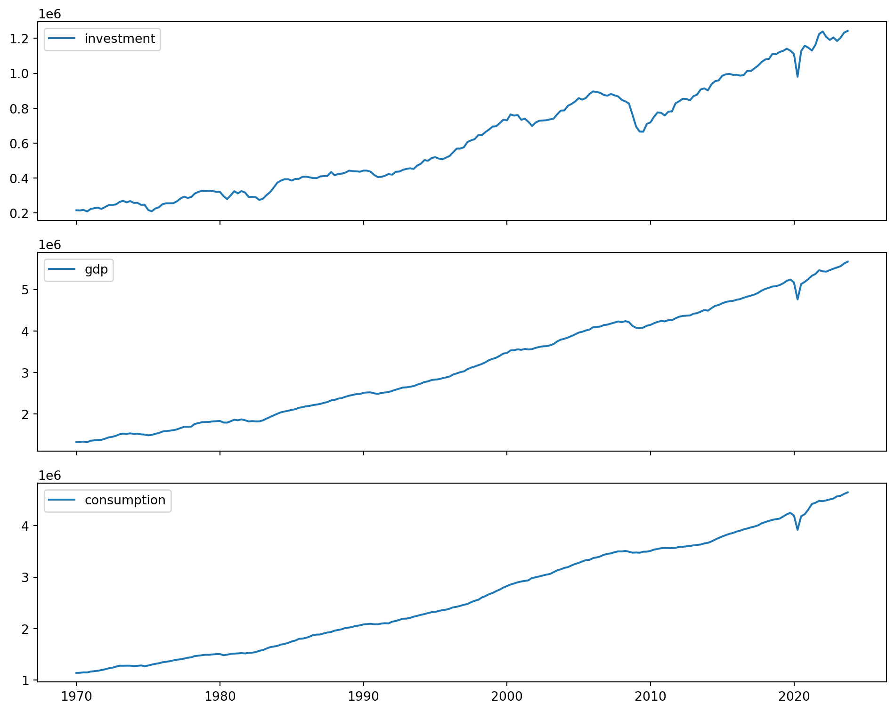
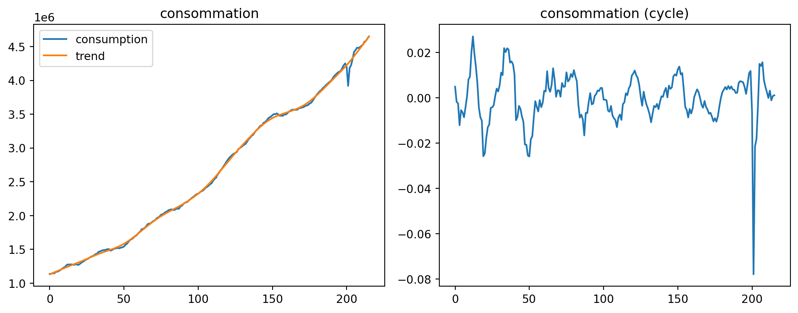

Code
from dyno import dynareCycles et fluctuations - AE2E6
Téléchargez le fichier mod rbc.
from dyno import dynareOuvrez le modèle RBC et résolvez-le. Corrigez les erreurs du fichier mod s’il y en a.
# report = dynare("rbc.mod")
# report(si besoin, téléchargez le modèle corrigé ici )
Inspectez les différents éléments de la solution (règle de décision, moments inconditionnels, simulations).
# report = dynare("rbc.mod")
# report # inspectez l'objet report pour trouver les différents éléments de la solutionInterprétez l’effet d’un choc de productivité. Comment dépend-il de la persistance du choc ?
Téléchargez les séries temporelles des États-Unis depuis la Banque mondiale pour : PIB réel, investissement, consommation, heures travaillées.
import matplotlib.pyplot as plt
import numpy as np
import pandas as pd
from dbnomics import fetch_series
from statsmodels.tsa.filters.hp_filter import hpfilterseries_ids = [
"OECD/QNA/USA.P5.LNBQRSA.Q", # investissement
"OECD/QNA/USA.B1_GS1.LNBQRSA.Q", # PIB
"OECD/QNA/USA.P3.LNBQRSA.Q", # consommation
]
frames = []
for sid in series_ids:
tmp = fetch_series(sid)[["period", "value"]].copy()
tmp["Subject"] = sid.split("/")[2].split(".")[1]
frames.append(tmp)
df_long = pd.concat(frames, ignore_index=True)# Ne garder que les données pertinentes, au format long.
df_long = df_long[["Subject", "period", "value"]]df = df_long.pivot(index="period", columns="Subject", values="value").reset_index()df = df.sort_values("period").dropna().reset_index(drop=True)df = df.rename(
columns={
"period": "period",
"P5": "investment",
"B1_GS1": "gdp",
"P3": "consumption",
}
)fig, axes = plt.subplots(3, 1, figsize=(10, 8), sharex=True)
axes[0].plot(df["period"], df["investment"], label="investment")
axes[0].legend()
axes[1].plot(df["period"], df["gdp"], label="gdp")
axes[1].legend()
axes[2].plot(df["period"], df["consumption"], label="consumption")
axes[2].legend()
plt.tight_layout()
plt.show()
Détrendez toutes les séries.
# Détrender la série de consommation.
series = df["consumption"]
_, trend = hpfilter(series, lamb=1600)
cycle = (series - trend) / trend
df["consumption_trend"] = trend
df["consumption_cycle"] = cyclefig, axes = plt.subplots(1, 2, figsize=(10, 4))
axes[0].plot(series.values, label="consumption")
axes[0].plot(trend.values, label="trend")
axes[0].set_title("consommation")
axes[0].legend()
axes[1].plot(cycle.values)
axes[1].set_title("consommation (cycle)")
plt.tight_layout()
plt.show()
# Détrender le PIB.
series = df["gdp"]
_, trend = hpfilter(series, lamb=1600)
cycle = (series - trend) / trend
df["gdp_trend"] = trend
df["gdp_cycle"] = cycle# Détrender la série d'investissement.
series = df["investment"]
_, trend = hpfilter(series, lamb=1600)
cycle = (series - trend) / trend
df["investment_trend"] = trend
df["investment_cycle"] = cycleCalculez les corrélations entre les séries détrendées. Calculez les ratios \(\frac{\sigma(investment)}{\sigma(gdp)}\) et \(\frac{\sigma (consumption)}{\sigma (gdp)}\). Comparez avec le modèle RBC et commentez.
# Ne garder que la partie pertinente du DataFrame.
relevant_df = df[["gdp_cycle", "investment_cycle", "consumption_cycle"]]# Convertir le dataframe en matrice NumPy.
mat = relevant_df.to_numpy()relevant_df.corr()| Subject | gdp_cycle | investment_cycle | consumption_cycle |
|---|---|---|---|
| Subject | |||
| gdp_cycle | 1.000000 | 0.909062 | 0.850059 |
| investment_cycle | 0.909062 | 1.000000 | 0.650094 |
| consumption_cycle | 0.850059 | 0.650094 | 1.000000 |
std_y = relevant_df["gdp_cycle"].std()
std_i = relevant_df["investment_cycle"].std()
std_c = relevant_df["consumption_cycle"].std()print(f"sigma(i)/sigma(y) : {std_i/std_y}")
print(f"sigma(c)/sigma(y) : {std_c/std_y}")sigma(i)/sigma(y) : 3.320828267976935
sigma(c)/sigma(y) : 0.6950802322322035Partez du même modèle rbc. Supposez que l’agent représentatif puisse épargner \(b^{\star}_t\) en actifs étrangers, rémunérés à un taux d’intérêt constant \(r^{\star}-1\).
Écrivez la nouvelle contrainte budgétaire du ménage représentatif.
À une date donnée \(t\), le ménage épargne \(b^{\star}_t\) sous forme de titres étrangers et reçoit le remboursement de son épargne de la période précédente \(b^{\star}_{t-1}\) plus les intérêts afférents \((r^{\star} - 1)b^{\star}_{t-1}\). Par rapport au modèle de base, la contrainte budgétaire en \(t\) devient donc :
\[c_t + i_t + b^ {\star}_t \leq w_t n_t + r_t k_{t-1} + r^ {\star} b^{\star}_{t-1}\]
et le lagrangien est :
\[\mathcal{L} = E_t \sum_{j=0}^\infty \beta^j\left[\log c_{t+j} + \chi \dfrac{(1-n_{t+j})^{1-\eta}}{1-\eta} \right.\]
\[+\lambda_{t+j} (w_{t+j}n_{t+j} + r_{t+j}k_{t+j-1} - c_{t+j}-k_{t+j} + (1-\delta)k_{t+j-1} + r^* b^*_{t+j-1} - b^*_{t+j} )\Bigg]\]
Écrivez la nouvelle condition d’optimalité.
Il faut ajouter au modèle la condition d’optimalité par rapport à \(b^{\star}_t\) : le ménage représentatif choisit le niveau d’épargne en titres étrangers qui maximise son utilité intertemporelle sous contrainte. On trouve :
\[ -\lambda_t + \beta E_t[\lambda_{t+1}r^*]=0\] soit : \[ \frac{1}{c_t}=\beta r^* E_t\left[\frac{1}{c_{t+1}} \right]\]
Quelle est la contrainte de long terme sur le taux d’intérêt \(r^{\star}\) ?
À l’état stationnaire, cette équation implique \(r^{\star}= \frac{1}{\beta}\). Bien que \(r^{\star}\) représente un taux d’intérêt décidé à l’étranger, \(\frac{1}{\beta}\) est sa seule valeur compatible avec l’existence d’un équilibre de long terme dans le modèle. En effet, il ne peut pas y avoir d’opportunité d’arbitrage à l’équilibre : tous les placements ont la même rentabilité.
Mettez à jour le fichier mod (fixez \(\overline{b^{\star}}=0\))
Pour mettre à jour le fichier .mod, il faut déclarer la nouvelle variable \(b^{\star}\) et le nouveau paramètre \(r^\star\) en lui donnant la valeur \(\frac{1}{\beta}\). Il faut ajouter au modèle la condition d’optimalité ci-dessus et mettre à jour l’équation donnant l’équilibre sur le marché des biens. En effet, cette équation est obtenue en équilibre général à partir de la contrainte budgétaire du ménage. En petite économie ouverte, on a :
\[c_t + i_t + b^{\star}_t = w_t n_t + r_t k_{t-1} + r^{\star} b^{\star}_{t-1}\]
Or l’entreprise, supposée en concurrence parfaite, ne fait pas de profit. Donc \(y_t = w_t n_t + r_t k_{t-1}\) et :
\[c_t + i_t + b^{\star}_t - r^{\star} b^{\star}_{t-1} = y_t\]
Ensuite, on remarque que le modèle statique ne détermine pas le niveau de \(b^{\star}\) à l’état stationnaire ; on choisit de le fixer à 0 de sorte que l’état stationnaire des autres variables du modèle ne soit pas affecté. On ajoute donc \(b^{\star}=0\) dans le bloc steady_state_model;.
Affichez les moments théoriques. Commentez.
On voit que Dynare ne parvient pas à calculer les moments (moyennes et variances) de certaines variables. De plus, les IRFs ne reviennent pas toutes à 0.
Simulez le modèle sur 100 périodes. Commentez.
Avec la commande check;, on voit que le modèle a une valeur propre de module égal à 1. Dans Dynare, ceci ne provoque pas d’erreur par rapport aux conditions de Blanchard et Kahn mais est problématique : le modèle a une racine unitaire et n’est donc pas stationnaire. En effet, il manque au modèle une force de rappel : si les ménages sont transitoirement incités à épargner plus sous forme de titres étrangers, rien ne les incite ensuite de façon endogène à baisser cette épargne vers son niveau initial, la rémunération de cette épargne étant toujours la même.
Supposez que le taux d’intérêt étranger dépend du niveau d’actifs étrangers
\[r^{\star}=\frac{1}{\beta} + exp(-\kappa b^{\star}_t) - 1\]
avec \(\kappa=0.01\). Comment interprétez-vous l’équation de \(r^{\star}_t\) ? Comment faut-il modifier les équations du modèle ?
Plus le ménage détient de titres étrangers, moins ceux-ci sont rémunérateurs. Inversement, plus le ménage est endetté vis-à-vis de l’étranger \((b^{\star} < 0)\), plus les prêteurs étrangers vont exiger un taux d’intérêt élevé. On peut donc interpréter le terme \(exp(-\kappa b^{\star}_t ) - 1\) comme une prime de risque sur le taux d’intérêt étranger. Pour mettre à jour le fichier .mod, il faut déclarer à présent \(r^{\star}\) comme une variable et non un paramètre, déclarer sa valeur à l’état stationnaire \(r^{\star} = \frac{1}{\beta}\) dans le bloc steady_state_model; et enfin ajouter l’équation ci-dessus dans le bloc model;.
Si on ne change pas les conditions d’Euler, cela revient à supposer que les consommateurs/le gouvernement n’internalisent pas l’effet de leur emprunt sur le taux d’intérêt.
Mettez à jour le fichier mod et commentez les moments obtenus. Dépendent-ils du choix de \(\kappa\) ?